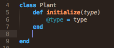
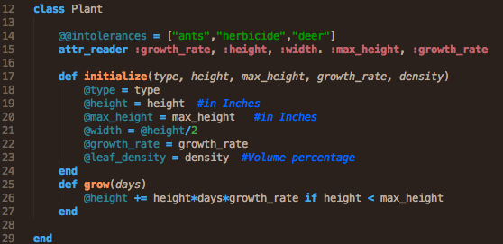
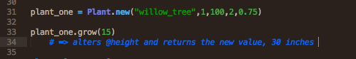
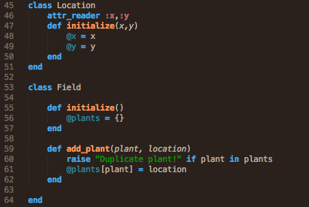
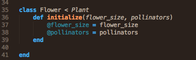

It is common with programming concepts, I've learned, to use familiarity as an illustrative device.
Consider a plant, any plant. How can we translate such a life form into code? What would we want to do with it? Ruby is an object-oriented language. This means its code can work abstractly much in the same way things do in the real world. On a certain level, everything is a collection of properties. A dog is a collection of biological and conceptual traits. It can interact with its surroundings in certain expected or predicted ways. When we see these traits and interactions, we know that this is a dog we're dealing with or observing. It is the same for objects in an object-oriented language. The only difference is, these objects are limited in creativity by the coders who created them or the pathways that led to their creation and the laws of whatever programming language they exist in. They are bound by computer logic not by genetic or environmental logic.
This type of object creation comes with relative limitations, since the physics of nature is infinitely complex, but also offers advantages that nature doesn't afford us. Consider a plant again, but this time a flower. What makes it a plant but also a flower? How does it interact with the world? How can you interact with it? Perhaps, we can grow it and observe it. We can also run trials like Mendel did with his pea plants to learn about them. But this takes time. Many ideas, answers, and conjectures about plants and flowers can be implemented or tested with code. Object-oriented programming offers the opportunity to circumvent real world time barriers.
First though, we must construct this plant. This isn't hard in Ruby. We create a plant object or a flower object. We do this by constructing classes. Here is the syntax:
We create the class and then define its initialization. In other words, we define what creates specific instances of the Plant class.
But, with the above syntax, you can see, you're only getting the most basic of basic plant constructions. What are we looking at, really? It's a class called Plant, of a type we can define. Beyond that, though, it isn't really much of a plant as all. There are no leaves. There are no seeds, no age, no way to grow or observe it. We fix that by implementing more methods and attributes. The key is to be smart about what features we add. A plant, in the real world, may have a billion definable attributes, but we recognize a plant based on a select few. More often than not, with class construction, that idea must be remembered. When working with these objects, we may only want to use seven properties or attributes to define a plant. So what do you do?
Above we have what we had before but now with a little more detail. Yet, it is still a very simple structure. Five more instance attributes were added, attributes that are specific to each instance of a Plant class. One attribute, intolerances, is a class attribute. You can see it's implemented differently. Why? Because it is applicable to all plants, at least under our definition. The other attributes are unique to instances of each Plant. When we create an instance of a Plant, it will by default have the intolerances attribute with the set value. This will reduce redundancy while also adding a little more complexity. Beyond that, we've added a couple attribute readers. This just means we can call an attribute as a method of a plant object and it will return the value for that attribute. This makes things much safer. Consider this the equivalent of seeing a plant's property with your eyes rather than extracting its DNA in order to read its genes.
Creating an instance of a Plant class is easy:
With this little bit of code, we have an actual object that we can manipulate that object. For instance, using the grow method, we'll be able to grow this specific plant over any number of days. Again, these attributes and methods are very simple, perhaps even inefficient if we were actually trying to create some simulation using plants, but it is illustrative of what is possible and how we reach those possibilities.
As things get more complicated, we move more into a realm that can better replicate the real world. Consider two more classes, Location and Field. How can they add to the use of our Plant class or any Plant objects?
It might be strange to think of a Location as an object or even of a Field as an object. But remember, we're thinking abstractly when working with concepts, and every concept can be implemented into an abstract object. A Location can have properties, particularly a reference point on an axis. Locations can interact with each other, determining distances for instance. A Field can hold other objects, plants or people or yard tables. Using these three basic classes, you can build a simple Field with plants rooted in it. With a little more investment, you'd be able to build a decent simulation, perhaps one that logs plant growth after seed dispersal.
Now what about those flowers we were talking about? How can we create those? We can think of a flower as a plant and thus a Flower object as a Plant object. Practically, a flower would have all the attributes found in a Plant Class, but would you want to create every flower by initializing a new Plant object? That would be inefficient. Plus, flowers can have attributes above and beyond what a general Plant object offers. This is where inheritance comes in.
Using this syntax you can create a Flower object that inherits from the Plant Class in much the same way flowering plants evolved from some other existing plants. Again, if we build upon this we can create a whole host of different classes (trees, flowers, shrubs, etc) that inherit from the Plant Class and are thus plants that can populate a field yet maintain traits unique to their specific subclass. Using this information, these classes, we can develop the applications we want and test various ideas that can't be easily tested in the real world. This is the potential and use of Classes in Ruby.